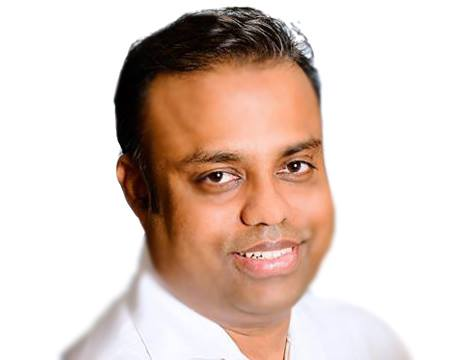

Rajeswaran Thangarajah | WDD 130
I am a highly motivated, resourceful, and customer-centric Business Management professional with over 18 years of experience. Besides, my role encompasses promoting high-growth marketing initiatives and implementing best practices for operational excellence, customer insight-driven marketing campaigns, and customer acquisition and retention strategies. Through continuous enhancement, I have substantially improved team productivity and workflow efficiency. Similarly, I am a self-taught front-end developer, proficient practitioner, and solution architect of cloud technologies.